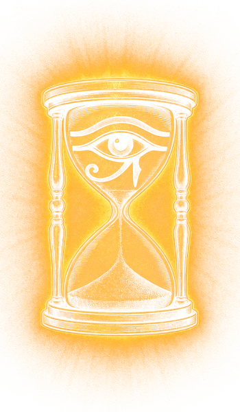

Das Designsystem
Die Marke sieht nicht aus wie eine Seite über Tarot. Sie sieht aus, als wäre sie selbst ein Tarotdeck. Wüste bei Nacht, Gold, Karten.
Die Marke ist ein Deck
Das Logo ist Karte 0
Die Sanduhr mit dem Auge des Horus, gerahmt wie eine Karte der großen Arkana.
Angebote sind Karten
Ziffer, Name, Rahmen: I Die Frage, II Der Blick, III Die Legung, IV Das Große Arkanum.
Abschnitte sind gezogene Karten
Römische Ziffer, Ornament, Überschrift. Die Seite liest sich wie eine Legung.
Thumbnails sind alte Karten
Pergamentrand, Kupferstich-Szene, echte Rider-Waite-Karten, Headline in Cinzel Black.
Im Zweifel: Wie würde das auf einer Tarotkarte stehen?
Stimme
Ruhig, tief, ehrlich. Wie in der Show: persönlich, mit Wissen, ohne Kitsch.
Immer du
Nie Sie. Auch in Mails, Posts und Buchungstexten.
Reflexion statt Vorhersage
Die Karten sind ein Werkzeug, um auf dich selbst zu schauen. Keine Zukunftsdeutung, keine Heilsversprechen.
Keine Gedankenstriche
Lieber zwei Sätze oder ein Doppelpunkt. Emojis höchstens als Pfeil vor einem Link in Mails.
Kursiv ist die Stimme
Einleitungen und Zitate stehen in Cormorant kursiv.
| So | Nicht so |
|---|---|
| Die Karten zeigen dir, was du schon ahnst. | Erfahre JETZT deine Zukunft!!! |
| Schau mit den Karten auf deine Situation. | Die Karten sagen dir, was passieren wird. |
| III · Die Legung | 60-Minuten Tarot-Reading |
Farben
Wüste bei Nacht. Kein Violett, keine Sterne, kein Schnee.
Grund
#120E09Seitenhintergrund, mit feiner Sandkörnung.
Fläche
#1C1610Karten, Kästen, Kartenrücken.
Fläche hervorgehoben
#2A2117Beliebtes Angebot, Hover.
Gold
#D6A441Die Marke: Ziffern, Preise, Rahmen, Buttons.
Goldschein
#F0C35ADas Leuchten des Logos. Sparsam, einmal pro Ansicht.
Sand
#F1E4C6Haupttext und Titel.
Sand gedämpft
#B6A07CFließtext, Beschreibungen.
Rost
#9A4426Warmer Akzent: Siegel, Highlights.
Pergament
#CDAA6ERand um Thumbnails und große Bilder.
Azur
#2F4F78Himmel alter Decks. Nur in Illustrationen.
Schrift
Zwei Schriften, nie mehr. Keine serifenlose, auch nicht im Kleingedruckten.
Cinzel Black 900 · ThumbnailsRetten oder zerstören?
Cinzel 400 · TitelWas die Karten wissen
Cinzel 600 · KartennamenDie Legung
Cinzel 400 · Ziffern0 · I · II · III · XVII
Cormorant 500 · Preise99€
Cormorant kursiv · StimmeDie Karten zeigen dir, was du schon ahnst.
Cormorant 500 · TextEin tieferer Blick in Muster, Energie und deinen Weg. Nie kleiner als 16px, nie dünner als 500.
Bausteine
Alles hier ist live, mit genau dem Code der Website.
0Sand der Zeit

Tarotkarte
Angebotskarte
Bildsprache
Kupferstich
Alles Illustrierte ist gestochen wie das Logo: feine Schraffur, Goldtinte auf Schwarz, warmer Schein. Auch Gäste, Filip und Jan, nie als normales Foto.
Echte Rider-Waite-Karten
Die Karten, über die wir sprechen, im Original. Die Zeichnungen von Pamela Colman Smith sind nach unserem Stand gemeinfrei, neuere Neufärbungen nicht.
Pergamentrand
Thumbnails, Posts und große Bilder bekommen den abgegriffenen Rand. So wird jedes Bild selbst zur alten Karte.
Prompt für KI-Szenen
Für Thumbnails immer ohne Text erzeugen und das untere Drittel freilassen, dort setzt das Thumbnail-Werkzeug die Headline.
Kupferstich, Gravur, feine Schraffur, Goldtinte auf schwarzem Grund, warmer goldener Lichtschein hinter den Figuren, 16:9, Figuren in der oberen Bildhälfte, unteres Drittel dunkel und leer, kein Text
Logo
Immer auf dunklem Grund. Nicht umfärben, nicht verzerren, keinen zweiten Schein.


Werkzeuge
Podcastfolgen
Die Website zeigt automatisch die neuesten drei Folgen der YouTube-Playlist und baut sich jeden Morgen neu.
Willkommensmail
Läuft in Mailjet als Automatisierung nach der Newsletter-Anmeldung: die Drei der Münzen.